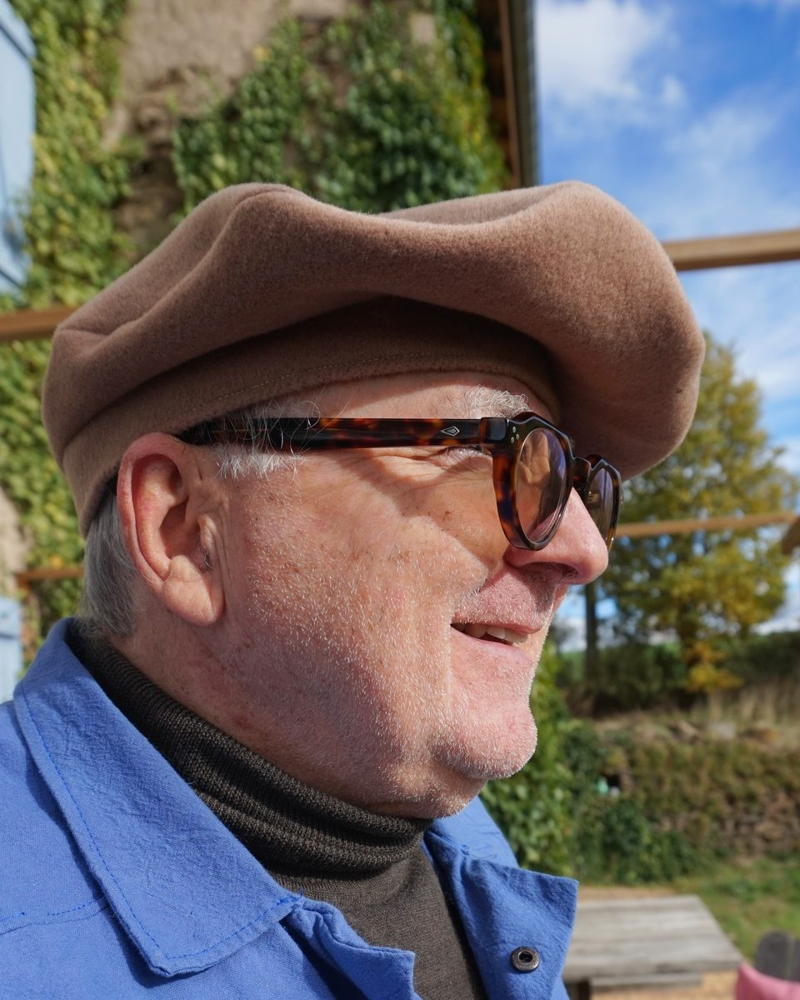

Béret basque, centré ou asymétrique
Un béret basque sur mesure, classique ou qui tombe naturellement sur le côté, selon le décalage choisi (voir réglages). Saisissez votre tour de tête, le diamètre et la hauteur du béret, et le décalage, puis téléchargez le patron en PDF A4 à l'échelle 1:1, ou en une page pour la vidéoprojection. Le béret est doublé. Tout est calculé dans votre navigateur ; aucune de vos données ne m’est envoyée.
Réglages
Marge de couture
Étalonnage d'impression
Le PDF d’une page contient toutes les pièces à l’échelle 1:1, sans découpage en feuilles A4, pour être projeté sur le tissu (par exemple avec Pattern Projector). Le carré de 5 × 5 cm sert à calibrer la projection.
Pour imprimer à la bonne échelle et contrôler le carré de 5 × 5 cm, voir la page Imprimer correctement.
Cotes en cm, mesurées sur la ligne de couture (sans la marge).
Trois pièces : le dessus (un disque) et le côté, coupés chacun une fois dans le tissu et une fois dans la doublure, et le bandeau, plié en deux, que vous choisissez en une seule pièce ou en deux bandes (l'une dans le tissu principal, l'autre dans un tissu secondaire, par exemple pour éviter le contact direct de la laine sur le front), avec le réglage « Type de bandeau ». La couture du côté est placée au point le plus étroit de la pièce, dans l'axe des deux centres. Les repères « dos », « côté long » et « devant » se correspondent d'une pièce à l'autre, bandeau compris.
Vous cherchez un béret classique, à pétales ? Voir le patron de béret à 6 ou 8 pétales.
Réalisations


Calcul géométrique exact du cône oblique (développement des génératrices). Faites toujours un essai en papier ou en toile avant de couper le tissu.
Un problème avec un patron ? Cliquez sur « Copier mes réglages », puis collez-les dans votre message via « Donner votre avis » en bas de page. Rien n’est envoyé automatiquement. Le formulaire est anonyme : indiquez votre adresse e-mail dans votre message si vous souhaitez une réponse.